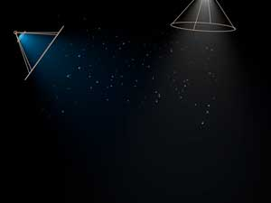

Visibility tab
The Visibility tab controls where particles are visible in your composition. For example, particles that are far away can be set to fade out, which is great for simulating fog. There is an Obscuration Transform group.
There is also an option to use a Z buffer from another node, using the ZBuffer input port. This method lets you control or match the visibility depth to an animation or image rendered in a 3D program.

At left, the Visibility tab. At right, a diagram of how Visibility works in Particular.
Far Vanish
The Far Vanish value set the distance from the camera when particles become completely invisible. Low values mean the particles become invisible relatively close to the camera. High values assure that the particles remain visible even if they are very distant from the camera.
At left, Far Vanish is low and the particles appear to have little depth.
At right, Far Vanish is high and the particles have a lot of depth.
Far Start Fade
The Far Start Fade set the distance from the camera when particles start to fade out or become transparent before they disappear at the Far Vanish point. Low values will make the particles start to fade relatively close to the camera. High values keep the particles from fading until they get close to the Far Vanish distance. Note that the Far Start Fade should be less than the Far Vanish value or the particles will not appear to fade out but simply disappear.
At left, Far Start Fade is low and particles look semi-transparent, even close to the camera.
At right, Far Start Fade is high, which means even distant particles are visible in the scene.
Near Start Fade
This control set the near distance from the camera where particles start to fade out. At low values, only particles very close to the camera become semi-transparent. Higher values make the fade begin farther from the camera likely causing more particles to render with some transparency.
At left, Near Start Fade is low, which makes most particles in the scene visible.
At right, Near Start Fade is high, which makes many particles appear partially transparent.
Near Vanish
This control set the near distance from the camera when particles become completely invisible. At low values, nearly all particles in the scene will be at least somewhat visible. Higher values mean the particles must be farther away from the camera to be invisible in the scene.
Note: Near Vanish should always be a lower value than Near Start Fade. Otherwise particles will appear to instantly disappear as they approach the camera.

Left to right, Near Vanish set low and high.
Near and Far Curves
This menu lets you set the curve used to fade particles in the Near Fade and Far Fade zones.
There are two Curve options:
How the ZBuffer works
Particular lets you select an RGB input to use as a Z-buffer. The ZBuffer input port is connected to a black-and-white image to control the visibility of particles. In our example below, we use a grayscale Ramp node as the input.
Z-buffering can be useful when particles are inserted into a 3D scene. A Z-buffer is also known as a Depth Buffer because it contains per-pixel depth values. This depth better simulates a 3D environment. Black is the farthest point from the camera and makes the affected particles look distant. White pixels are the closest pixels to the camera and make the affected particles look close. The inbetween gray values represent intermediate distances. Typically, Z-buffer particles are small and move relatively quickly compared to the animation or objects in the original 3D content.
Z at Black
This affects the black value data for the ZBuffer input. Since black represents the farthest point from the camera, Particular uses Z at Black to determine how the black pixels in the ZBuffer image correspond to the Far Vanish distance. By default, this value is set to 20 units from the camera. This means any particles closer to the camera than 20 will be visible.
You can use values that correspond to real units.
Z at White
This affects the white value data for the ZBuffer input. Since white represents the closest point to the camera, Particular uses Z at White to determine how the white pixels in the ZBuffer image correspond to the Near Vanish distance. By default, this value is set to 0 units from the camera. This means any particles farther from the camera than 0 will be invisible, because the source image is closer to the camera than the particles.
You can use values that correspond to real units.
At left, a grayscale Ramp node is used as the ZBuffer. In middle, the Ramp that is used. At right, the ZBuffer is turned off.